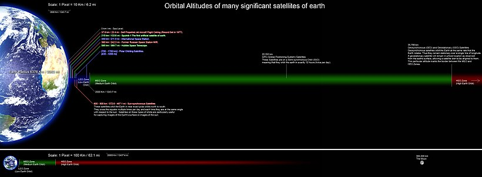
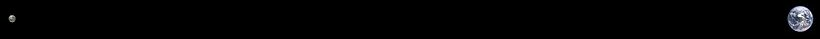
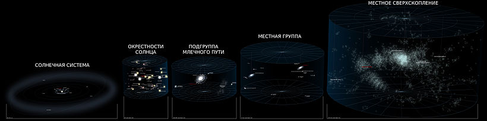
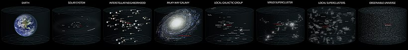
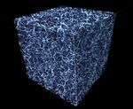

Космическое пространство
Косми́ческое простра́нство, ко́смос (др.-греч. κόσμος — «упорядоченность», «порядок») — относительно пустые участки Вселенной, которые лежат вне границ атмосфер небесных тел. Космос не является абсолютно пустым пространством: в нём есть, хотя и с очень низкой плотностью, межзвёздное вещество (преимущественно молекулы водорода), кислород в малых количествах (остаток после взрыва звезды), космические лучи и электромагнитное излучение, а также гипотетическая тёмная материя.
Этимология
В своём изначальном понимании греческий термин «космос» (порядок, мироустройство) имел философскую основу, определяя гипотетический замкнутый вакуум вокруг Земли — центра Вселенной[1]. Тем не менее, в языках на латинской основе и её заимствованиях к одинаковой семантике применяют практический термин «пространство» (так как с научной точки зрения обволакивающий Землю вакуум бесконечен), поэтому в русском и близких ему языках в результате реформенной корректировки родился своеобразный плеоназм «космическое пространство».
Границы
Чёткой границы не существует, атмосфера разрежается постепенно по мере удаления от земной поверхности, и до сих пор нет единого мнения, что считать фактором начала космоса. Если бы температура была постоянной, то давление бы изменялось по экспоненциальному закону от 100 кПа на уровне моря до нуля. Международная авиационная федерация в качестве рабочей границы между атмосферой и космосом установила высоту в 100 км (линия Кармана), потому что на этой высоте для создания подъёмной аэродинамической силы необходимо, чтобы летательный аппарат двигался с первой космической скоростью, из-за чего теряется смысл авиаполёта[2][3][4][5].
Астрономы из США и Канады измерили границу влияния атмосферных ветров и начала воздействия космических частиц. Она оказалась на высоте 118 километров, хотя само NASA считает границей космоса 122 км. На такой высоте шаттлы переключались с обычного маневрирования с использованием только ракетных двигателей на аэродинамическое с «опорой» на атмосферу[3][4].
Солнечная система

Пространство в Солнечной системе называют межпланетным пространством, которое переходит в межзвёздное пространство в точках гелиопаузы солнцестояния. Вакуум космоса не является абсолютным — в нём присутствуют атомы и молекулы, обнаруженные с помощью микроволновой спектроскопии, реликтовое излучение, которое осталось от Большого взрыва, и космические лучи, в которых содержатся ионизированные атомные ядра и разные субатомные частицы. Также есть газ, плазма, пыль, небольшие метеоры и космический мусор (материалы, которые остались от деятельности человека на орбите). Отсутствие воздуха делает космическое пространство (и поверхность Луны) идеальными участками для астрономических наблюдений на всех длинах волн электромагнитного спектра. Доказательством этого являются фотографии, полученные при помощи космического телескопа Хаббл. Кроме того, бесценную информацию о планетах, астероидах и кометах Солнечной системы получают с помощью космических аппаратов.
Воздействие пребывания в открытом космосе на организм человека
Как утверждают учёные НАСА, вопреки распространённым представлениям, при попадании в открытый космос без защитного скафандра человек не замёрзнет, не взорвётся и мгновенно не потеряет сознание, его кровь не закипит — вместо этого настанет смерть от недостатка кислорода. Опасность заключается в самом процессе декомпрессии — именно этот период времени наиболее опасен для организма, так как при взрывной декомпрессии пузырьки газа в крови начинают расширяться. Если присутствует хладагент (например, азот), то при таких условиях он замораживает кровь. В космических условиях недостаточно давления для поддержания жидкого состояния вещества (возможны лишь газообразное или твёрдое состояние, за исключением жидкого гелия), поэтому вначале со слизистых оболочек организма (язык, глаза, лёгкие) начнёт быстро испаряться вода. Некоторые другие проблемы — декомпрессионная болезнь, солнечные ожоги незащищённых участков кожи и поражение подкожных тканей — начнут сказываться уже через 10 секунд. В какой-то момент человек потеряет сознание из-за нехватки кислорода. Смерть может наступить примерно через 1-2 минуты, хотя точно это не известно. Тем не менее, если не задерживать дыхание в лёгких (попытка задержки приведёт к баротравме), то 30-60 секунд пребывания в открытом космосе не вызовут каких-либо необратимых повреждений человеческого организма[6].
В НАСА описывают случай, когда человек случайно оказался в пространстве, близком к вакууму (давление ниже 1 Па) из-за утечки воздуха из скафандра. Человек оставался в сознании приблизительно 14 секунд — примерно такое время требуется для того, чтобы обеднённая кислородом кровь попала из лёгких в мозг. Внутри скафандра не возник полный вакуум, и рекомпрессия испытательной камеры началась приблизительно через 15 секунд. Сознание вернулось к человеку, когда давление поднялось до эквивалентного высоте примерно 4,6 км. Позже попавший в вакуум человек рассказывал, что он чувствовал и слышал, как из него выходит воздух, и его последнее осознанное воспоминание состояло в том, что он чувствовал, как вода на его языке закипает.
Журнал «Aviation Week and Space Technology» 13 февраля 1995 г. опубликовал письмо, в котором рассказывалось об инциденте, произошедшем 16 августа 1960 года во время подъёма стратостата с открытой гондолой на высоту 19,5 миль (около 31 км) для совершения рекордного прыжка с парашютом (Проект «Эксельсиор»). Правая рука пилота оказалась разгерметизирована, однако он решил продолжить подъём. Рука, как и можно было ожидать, испытывала крайне болезненные ощущения, и ею нельзя было пользоваться. Однако при возвращении пилота в более плотные слои атмосферы состояние руки вернулось в норму[7].
Космонавт Михаил Корниенко и астронавт Скотт Келли, отвечая на вопросы, сообщили, что нахождение в открытом космосе без скафандра может привести к выходу азота из состава крови, заставив её, по сути, кипеть[8].
Границы на пути к космосу и пределы дальнего космоса
Атмосфера и ближний космос
- Уровень моря — атмосферное давление 101,325 кПа (1 атм.; 760 мм рт. ст), плотность среды 2,55⋅1022 молекул в дм³[9]. Яркость дневного ясного неба 1500—5000 кд/м² при высоте Солнца 30—60°[10][11].
- 0,5 км — до этой высоты проживает 80 % человеческого населения мира.
- 2 км — до этой высоты проживает 99 % населения мира[12].
- 2—3 км — начало проявления недомоганий (горная болезнь) у неакклиматизированных людей.
- 4,7 км — МФА требует дополнительного снабжения кислородом для пилотов и пассажиров.
- 5,0 км — 50 % от атмосферного давления на уровне моря[источник не указан 435 дней].
- 5,1 км — самый высокорасположенный (самый высокий населённый пункт город Ла-Ринконада (Перу).
- 5,5 км — пройдена половина массы атмосферы[13] (гора Эльбрус). Яркость неба в зените 646—1230 кд/м²[14].
- 6 км — граница обитания человека (временные посёлки шерпов в Гималаях[15]), граница жизни в горах.
- до 6,5 км — снеговая линия в Тибете и Андах. Во всех прочих местах она располагается ниже, в Антарктиде до 0 м над уровнем моря.
- 6,6 км — самая высоко расположенная каменная постройка (гора Льюльяильяко, Южная Америка)[16].
- 7 км — граница приспособляемости человека к длительному пребыванию в горах.
- 7,99 км — граница однородной атмосферы при 0 °C и одинаковой плотности от уровня моря. Яркость неба снижается пропорционально уменьшению высоты однородной атмосферы на данном уровне[17].
- 8,2 км — граница смерти без кислородной маски: даже здоровый и тренированный человек может в любой момент потерять сознание и погибнуть. Яркость неба в зените 440—893 кд/м²[18].
- 8,848 км — высочайшая точка Земли гора Эверест — предел доступности пешком в космос.
- 9 км — предел приспособляемости к кратковременному дыханию атмосферным воздухом.
- 10—12 км — граница между тропосферой и стратосферой (тропопауза) в средних широтах. Также это граница подъёма обычных облаков, дальше простирается разрежённый и сухой воздух.
- 12 км — дыхание воздухом эквивалентно пребыванию в космосе (одинаковое время потери сознания ~10—20 с)[19]; предел кратковременного дыхания чистым кислородом без дополнительного давления.
- Потолок дозвуковых пассажирских авиалайнеров. Яркость неба в зените 280—880 кд/м²[14].
- 15—16 км — дыхание чистым кислородом эквивалентно пребыванию в космосе[20].
- Над головой осталось 10 % массы атмосферы[21]. Небо становится тёмно-фиолетовым (10—15 км)[22].
- 16 км — при нахождении в высотном костюме в кабине нужно дополнительное давление.
- 18,9—19,35 — линия Армстронга — начало космоса для организма человека: закипание воды при температуре человеческого тела. Внутренние жидкости ещё не кипят, так как тело генерирует достаточно внутреннего давления, но могут начать кипеть слюна и слёзы с образованием пены, набухать глаза.
- 19 км — яркость тёмно-фиолетового неба в зените 5 % от яркости чистого синего неба на уровне моря (74,3—75 свечей[23] против 1490 кд/м²[10]), днём могут быть видны самые яркие звёзды и планеты.
- 20 км — зона от 20 до 100 км по ряду параметров считается «ближним космосом». На этих высотах вид из иллюминатора почти как в околоземном космосе, но спутники здесь не летают, небо тёмно-фиолетовое и чёрно-лиловое, хотя и выглядит чёрным по контрасту с яркими Солнцем и поверхностью.
- Потолок тепловых аэростатов-монгольфьеров (19 811 м)[24].
- 20—30 км — начало верхней атмосферы[25].
- 20—22 км — верхняя граница биосферы: предел подъёма ветрами живых спор и бактерий[26].
- 20—25 км — озоновый слой в средних широтах. Яркость неба днём в 20—40 раз меньше яркости на уровне моря[27], как в центре полосы полного солнечного затмения и как в сумерки, когда Солнце ниже горизонта на 2—3 градуса и могут быть видны планеты.
- 25 км — интенсивность первичной космической радиации начинает преобладать над вторичной (рождённой в атмосфере)[28].
- 25—26 км — максимальная высота реального применения существующих реактивных самолётов.
- 29 км — самая низкая научно определённая граница атмосферы по закону изменения давления и падения температуры с высотой, XIX век[29][30]. Тогда не знали о стратосфере и обратном подъёме температуры.
- 30 км — яркость неба в зените 20—35 кд/м² (~1 % наземного)[31], звёзд не видно, могут быть видны самые яркие планеты[32]. Высота однородной атмосферы над этим уровнем 95—100 м[33][31].
- 30—100 км — средняя атмосфера по терминологии COSPAR[34].
- 34,4 км — среднее давление у поверхности Марса соответствует этой высоте[35]. Тем не менее этот разреженный газ способен поднять пыль, окрашивающую марсианское небо в жёлто-розовый цвет.
- 34,668 км — рекорд высоты стратостата с двумя пилотами (проект «Страто-Лаб»[en], 1961 г.)
- ок. 35 км — начало космоса для воды или тройная точка воды: на этой высоте атмосферное давление 611,657 Па и вода кипит при 0 °C, а выше не может находиться в жидком виде.
- 37,8 км — рекорд высоты полёта турбореактивных самолётов (МиГ-25М, динамический потолок)[36].
- ок. 40 км (52 000 шагов) — верхняя граница атмосферы в XI веке: первое научное определение её высоты по продолжительности сумерек и диаметру Земли (арабский учёный Альгазен, 965—1039 гг.)[37]
- 41,42 км — рекорд высоты стратостата, управляемого одним человеком, а также рекорд высоты прыжка с парашютом (Алан Юстас, 2014 г.)[38]. Предыдущий рекорд — 39 км (Феликс Баумгартнер, 2012 г.)
- 45 км — теоретический предел для прямоточного воздушно-реактивного самолёта.
- 48 км — атмосфера не ослабляет ультрафиолетовые лучи Солнца[39].
- 50—55 км — граница между стратосферой и мезосферой (стратопауза).
- 50—150 км — в этой зоне ни один аппарат не сможет долго лететь на постоянной высоте[40][41].
- 51,694 км — последний пилотируемый рекорд высоты в докосмическую эпоху (Джозеф Уокер на ракетоплане X-15, 30 марта 1961 г.). Высота однородной атмосферы 5,4 м[17] — менее 0,07 % её массы.
- 53,7 км — рекорд высоты беспилотного газового аэростата метеозонда (20 сентября 2013 г., Япония)[42].
- 55 км — спускаемый аппарат при баллистическом спуске испытывает максимальные перегрузки[43].
- Атмосфера перестаёт поглощать космическую радиацию[44]. Яркость неба ок. 5 кд/м²[45][46]. Выше свечение некоторых явлений может намного перекрывать яркость рассеянного света (см. далее).
- 40—80 км — максимальная ионизация воздуха (превращение воздуха в плазму) от трения о корпус спускаемого аппарата при входе в атмосферу с первой космической скоростью[47].
- 70 км — верхняя граница атмосферы в 1714 г. по расчёту Эдмунда Галлея на основе измерений давления альпинистами, закона Бойля и наблюдений за метеорами[48].
- 80 км — высота перигея ИСЗ, с которого начинается сход с орбиты[49].
- Начало регистрируемых перегрузок при спуске с 1-й космической скоростью (СА Союз)[50].
- 75—85 км — высота появления серебристых облаков, иногда имеющих яркость до 1—3 кд/м²[51].
- 80,45 км (50 миль) — граница космоса в ВВС США. NASA придерживается высоты ФАИ 100 км[52][53].
- 80—90 км — граница между мезосферой и термосферой (мезопауза). Яркость неба 0,08 кд/м²[54][55].
- 90 км — начало регистрируемых перегрузок при спуске со второй космической скоростью.
- 90—100 км — турбопауза, ниже которой гомосфера, где воздух перемешивается и одинаков по составу, а выше — гетеросфера, в которой ветры останавливаются и воздух делится на слои разных по массе газов.
- ок. 100 км — начало плазмосферы, где ионизированный воздух взаимодействует с магнитосферой.
- ок. 100 км — самый яркий натриевый слой свечения атмосферы толщиной 10—20 км[56], из космоса наблюдается как единый светящийся слой[57]
- 100 км — зарегистрированная граница атмосферы в 1902 г.: открытие отражающего радиоволны ионизированного слоя Кеннелли — Хевисайда 90—120 км[48].

Околоземное космическое пространство
- 100 км — официальная международная граница между атмосферой и космосом — линия Кармана, рубеж между аэронавтикой и космонавтикой. Летающий корпус и крылья начиная со 100 км не имеют смысла, так как скорость полёта для создания подъёмной силы становится выше первой космической скорости и атмосферный летательный аппарат превращается в космический спутник. Плотность среды 12 квадриллионов частиц на 1 дм³[58], яркость тёмно-буро-фиолетового неба 0,01—0,0001 кд/м² — приближается к яркости тёмно-синего ночного неба[59][54]. Высота однородной атмосферы 45 см[17].
- 100—110 км — начало разрушения спутника: обгорание антенн и панелей солнечных батарей[60].
- 110 км — минимальная высота аппарата, буксируемого более высоколетящим тяжёлым спутником[41].
- 110—120 км[61] — минимальная высота начала последнего витка спутника с наименьшим BC[62].
- 118 км — переход от атмосферного ветра к потокам заряженных частиц[63].
- 121—122 — самый низкий начальный перигей секретных спутников, но апогей их был 260—400 км.[64]
- 122 км (400 000 футов) — первые заметные проявления атмосферы при возвращении с орбиты: набегающий воздух стабилизирует крылатый аппарат типа Спейс Шаттл носом по ходу движения[4].
- 120—130 км[61] — шарообразный спутник диаметром 1—1,1 м и массой 500—1000 кг, завершая оборот, переходит в баллистический спуск[65][66][67]; однако обычно спутники менее плотные, имеют необтекаемые выступающие детали, и потому высота начала последнего витка не менее 140 км[68].
- 135 км — максимальная высота начала сгорания самых быстрых метеоров и болидов[69].
- 150 км[61] — спутник с геометрически нарастающей быстротой теряет высоту, ему осталось существовать 1—2 оборота[70]; спутник диаметром 1,1 м массой 1000 кг за один оборот спустится на 20 км[65].
- 150—160 км — дневное небо становится чёрным[48][71]: яркость неба приближается к минимальной различаемой глазом яркости 1⋅10-6 кд/м²[72][54][73].
- 160 км (100 миль) — граница начала более-менее стабильных низких околоземных орбит.
- 188 км — высота первого беспилотного космического полёта (ракета Фау-2, 1944 г.)[74][75]
- 200 км — наиболее низкая возможная орбита с краткосрочной стабильностью (до нескольких дней).
- 302 км — максимальная высота (апогей) первого пилотируемого космического полёта (Ю. А. Гагарин на космическом корабле Восток-1, 12 апреля 1961 г.)
- 320 км — зарегистрированная граница атмосферы в 1927 г.: открытие слоя Эплтона[39].
- 350 км — наиболее низкая возможная орбита с долгосрочной стабильностью (до нескольких лет).
- ок. 400 км — высота орбиты Международной космической станции. Наибольшая высота ядерных испытаний (Starfish Prime, 1962 г.). Взрыв создал искусственный радиационный пояс, который мог бы умертвить космонавтов на околоземных орбитах, но в это время не проводилось пилотируемых полётов.
- 500 км — начало внутреннего протонного радиационного пояса и окончание безопасных орбит для длительных полётов человека. Не различаемая глазом яркость неба всё ещё имеет место[46].
- 690 км — средняя высота границы между термосферой и экзосферой (Термопауза, экзобаза). Выше экзобазы длина свободного пробега молекул воздуха больше высоты однородной атмосферы и если они летят вверх со скоростью более второй космической, то с вероятностью свыше 50 % покинут атмосферу.
- 947 км — высота апогея первого искусственного спутника Земли (Спутник-1, 1957 г.).
- 1000—1100 км — максимальная высота полярных сияний, последнее видимое с поверхности Земли проявление атмосферы; но обычно хорошо заметные сияния яркостью до 1 кд/м²[76][77] происходят на высотах 90—400 км. Плотность среды 400—500 миллионов частиц на 1 дм³[78][79].
- 1300 км — зарегистрированная граница атмосферы к 1950 году[80].
- 1320 км — максимальная высота баллистической ракеты при полёте на расстояние 10 тыс. км[81].
- 1372 км — максимальная высота, достигнутая человеком до первых полётов к Луне; космонавты впервые обнаружили не просто кривой горизонт, а полную шарообразность Земли (корабль Джемини-11 2 сентября 1966 г.)[82].
- 2000 км — условная граница между низкими и средними околоземными орбитами. Атмосфера не оказывает воздействия на спутники, и они могут существовать на орбите многие тысячелетия.
- 3000 км — максимальная интенсивность потока протонов внутреннего радиационного пояса (до 0,5—1 Гр/час — смертельная доза в течение нескольких часов полёта)[83].
- 12 756,49 км — мы удалились на расстояние, равное экваториальному диаметру планеты Земля.
- 17 000 км — максимум интенсивности внешнего электронного радиационного пояса до 0,4 Гр в сутки[84].
- 27 743 км — расстояние пролёта заранее (свыше 1 дня) обнаруженного астероида 2012 DA14.
- 35 786 км — граница между средними и высокими околоземными орбитами[en].
- Высота геостационарной орбиты, спутник на такой орбите будет всегда висеть над одной точкой экватора. Плотность частиц на этой высоте ~20—30 тыс. атомов водорода на дм³[85].
- ок. 80 000 км — теоретический предел атмосферы в первой половине XX века. Если бы вся атмосфера равномерно вращалась вместе с Землёй, то с этой высоты на экваторе центробежная сила превосходила бы притяжение, и молекулы воздуха, вышедшие за эту границу, разлетались бы в разные стороны[86][87]. Граница оказалась близка к реальной и явление рассеяния атмосферы имеет место, но происходит оно из-за теплового и корпускулярного воздействия Солнца во всём объёме экзосферы.
- ок. 90 000 км — расстояние до головной ударной волны, образованной столкновением магнитосферы Земли с солнечным ветром.
- ок. 100 000 км — верхняя граница экзосферы (геокорона) Земли со стороны Солнца[88], во время повышенной солнечной активности она уплотняется до 5 диаметров Земли (~60 тыс. км). Однако с теневой стороны последние следы «хвоста» экзосферы, сдуваемого солнечным ветром, могут прослеживаться до расстояний 50—100 диаметров Земли (600—1200 тыс. км)[89]. Каждый месяц в течение четырёх дней этот хвост пересекает Луна[90].

Межпланетное пространство
- 260 000 км — радиус сферы тяготения, где притяжение Земли превосходит притяжение Солнца.
- 363 104—405 696 км — высота орбиты Луны над Землёй (30 диаметров Земли). Плотность среды межпланетного пространства (плотность солнечного ветра) в окрестностях земной орбиты 5—10 тысяч частиц на 1 дм³ со всплесками до 200 000 частиц в 1 дм³ во время солнечных вспышек[91]
- 401 056 км — абсолютный рекорд высоты, на которой был человек (Аполлон-13 14 апреля 1970 г.).
- 928 000 км — радиус гравитационной сферы Земли.
- 1 497 000 км — радиус сферы Хилла Земли и максимальная высота её орбитальных спутников с периодом обращения 1 год. Выше притяжение Солнца будет перетягивать вышедшие из сферы тела.
- 1 500 000 км — расстояние до одной из точек либрации L2, в которых попавшие туда тела находятся в гравитационном равновесии. Космическая станция, выведенная в эту точку, с минимальными затратами топлива на коррекции траектории всегда бы следовала за Землёй и находилась бы в её тени.
- 21 000 000 км — можно считать, что исчезает гравитационное воздействие Земли на пролетающие объекты[3][4].
- 40 000 000 км — минимальное расстояние от Земли до ближайшей большой планеты Венера.
- 56 000 000 — 58 000 000 км — минимальное расстояние до Марса во время Великих противостояний.
- 149 597 870,7 км — среднее расстояние от Земли до Солнца. Это расстояние служит мерилом расстояний в Солнечной системе и называется астрономическая единица (а. е.). Свет проходит это расстояние примерно за 500 секунд (8 минут 20 секунд).
- 590 000 000 км — минимальное расстояние от Земли до ближайшей большой газовой планеты Юпитер. Дальнейшие числа указывают расстояние от Солнца.
- 4 500 000 000 км (4,5 миллиардов км, 30 а. е.) — радиус границы околосолнечного межпланетного пространства — радиус орбиты самой дальней большой планеты Нептун. Начало Пояса Койпера.
- 8 230 000 000 км (55 а. е.) — дальняя граница пояса Койпера — пояса малых ледяных планет, в который входит карликовая планета Плутон. Начало Рассеянного диска, состоящего из нескольких известных транснептуновых объектов с вытянутыми орбитами и короткопериодических комет.
- 11 384 000 000 км — перигелий малой красной планеты Седны в 2076 году, являющейся переходным случаем между Рассеянным диском и Облаком Оорта (см ниже). После этого планета начнёт шеститысячелетний полёт по вытянутой орбите к афелию, отстоящему на 140—150 млрд км от Солнца.
- 11—14 млрд км — граница гелиосферы, где солнечный ветер со сверхзвуковой скоростью наталкивается на межзвёздное вещество и создаёт ударную волну, начало межзвёздного пространства.
- 21 826 579 940 км (примерно 146 а. е.) — расстояние до самого дальнего на данный момент межзвёздного автоматического космического аппарата Вояджер-1 на 6 июня 2019 года.
- 35 000 000 000 км (35 млрд км, 230 а. е.) — расстояние до предполагаемой головной ударной волны, образованной собственным движением Солнечной системы через межзвёздное вещество.
- 65 000 000 000 км — расстояние до аппарата Вояджер-1 к 2100 году.

Межзвёздное пространство
- ок. 300 000 000 000 км (300 млрд км) — ближняя граница облака Хиллса, являющегося внутренней частью облака Оорта — большого, но очень разреженного шарообразного скопища ледяных глыб, которые медленно летят по своим орбитам. Изредка выбиваясь из этого облака и приближаясь к Солнцу, они становятся долгопериодическими кометами.
- 4 500 000 000 000 км (4,5 трлн км) — расстояние до орбиты гипотетической планеты Тюхе, вызывающей исход комет из Облака Оорта в околосолнечное пространство.
- 9 460 730 472 580,8 км (ок. 9,5 трлн км) — световой год — расстояние, которое свет со скоростью 299 792 км/с проходит за 1 год. Служит для измерения межзвёздных и межгалактических расстояний.
- до 15 000 000 000 000 км — дальность вероятного нахождения гипотетического спутника Солнца звезды Немезида, ещё одного возможного виновника прихода комет к Солнцу.
- до 20 000 000 000 000 км (20 трлн км, 2 св. года) — гравитационные границы Солнечной системы (Сфера Хилла) — внешняя граница Облака Оорта, максимальная дальность существования спутников Солнца (планет, комет, гипотетических слабосветящих звёзд).
- 30 856 776 000 000 км — 1 парсек — более узкопрофессиональная астрономическая единица измерения межзвёздных расстояний, равен 3,2616 светового года.
- ок. 40 000 000 000 000 км (40 трлн км, 4,243 св. года) — расстояние до ближайшей к нам известной звезды Проксима Центавра.
- ок. 56 000 000 000 000 км (56 трлн км, 5,96 св. года — расстояние до летящей звезды Барнарда. К ней предполагалось послать первый реально проектируемый с 1970-х годов беспилотный аппарат «Дедал», способный долететь и передать информацию в пределах одной человеческой жизни (около 50 лет).
- 100 000 000 000 000 км (100 трлн км, 10,57 св. года) — в пределах этого радиуса находятся 18 ближайших звёзд, включая Солнце.
- ок. 300 000 000 000 000 км (300 трлн км, 30 св. лет) — размер Местного межзвёздного облака, через которое сейчас движется Солнечная система (плотность среды этого облака 300 атомов на 1 дм³).
- ок. 3 000 000 000 000 000 км (3 квадрлн км, 300 св. лет) — размер Местного газового пузыря, в состав которого входит Местное межзвёздное облако с Солнечной системой (плотность среды 50 атомов на 1 дм³).
- ок. 33 000 000 000 000 000 км (33 квадрлн км, 3500 св. лет) — толщина галактического Рукава Ориона, вблизи внутреннего края которого находится Местный пузырь.
- ок. 300 000 000 000 000 000 км (300 квадрлн км) — расстояние от Солнца до ближайшего внешнего края гало нашей галактики Млечный Путь (англ. Milky Way). До конца XIX века Галактика считалась пределом всей Вселенной.
- ок. 1 000 000 000 000 000 000 км (1 квинтлн км, 100 тысяч св. лет) — диаметр нашей галактики Млечный Путь, в ней 200—400 миллиардов звёзд, суммарная масса вместе с чёрными дырами, тёмной материей и другими невидимыми объектами — ок. 3 триллионов Солнц. За её пределами простирается чёрное, почти пустое и беззвёздное межгалактическое пространство с едва различимыми без телескопа маленькими пятнами нескольких ближайших галактик. Объём межгалактического пространства многократно больше объёма межзвёздного, а плотность среды его — менее 1 атома водорода на 1 дм³

Межгалактическое пространство
- ок. 5 000 000 000 000 000 000 км (ок. 5 квинтиллионов км) — размер подгруппы Млечного Пути, в которую входят наша галактика и её спутники карликовые галактики, всего 15 галактик. Самые известные из них — Большое Магелланово Облако и Малое Магелланово Облако, через 4 миллиарда лет они вероятно будут поглощены нашей галактикой.
- ок. 30 000 000 000 000 000 000 км (ок. 30 квинтиллионов км, ок. 1 млн парсек) — размер Местной группы галактик, в которую входят три крупных соседа: Млечный путь, Галактика Андромеды, Галактика Треугольника, и многочисленные карликовые галактики (более 50 галактик). Галактика Андромеды и наша галактика сближаются со скоростью около 120 км/с и вероятно столкнутся друг с другом примерно через 4—5 миллиардов лет.
- ок. 2 000 000 000 000 000 000 000 км (2 секстиллиона км, 200 млн св. лет) — размер Местного сверхскопления галактик (Сверхскопления Девы) (около 30 тысяч галактик, масса около квадриллиона Солнц).
- Observable universe logarithmic illustration.png
- ок. 4 900 000 000 000 000 000 000 км (4,9 секстиллиона км, 520 млн св. лет) — размер ещё более крупного сверхскопления Ланиакея («Необъятные небеса»), в которое входят наше сверхскопление Девы и так называемый Великий аттрактор, притягивающий к себе и заставляющий двигаться окружающие галактики, включая нашу, со скоростью обращения около 500 км/с. Всего в Ланиакее около 100 тысяч галактик, масса её около 100 квадриллионов Солнц.

- ок. 10 000 000 000 000 000 000 000 км (10 секстиллионов км, 1 млрд св. лет) — длина Комплекса сверхскоплений Рыб-Кита, называемого ещё галактической нитью и гиперскоплением Рыб-Кита, в котором мы живём (60 скоплений галактик, 10 масс Ланиакеи или около квинтиллиона Солнц).
- до 100 000 000 000 000 000 000 000 км — расстояние до Супервойда Эридана, самого большого на сегодня известного войда размером около 1 млрд св. лет. В центральных областях этого огромного пустого пространства нет звёзд и галактик, и вообще почти нет обычной материи, плотность его среды 10 % от средней плотности Вселенной или 1 атом водорода в 1—2 м³. Космонавт в центре войда без большого телескопа не смог бы увидеть ничего, кроме темноты.
- На рисунке справа в кубической вырезке из Вселенной видны многие сотни больших и малых войдов, расположенных, как пузыри в пене, между многочисленными галактическими нитями. Объём войдов намного больше объёма нитей.
- ок. 100 000 000 000 000 000 000 000 км (100 секстиллионов км, 10 млрд св. лет) — длина великой стены Геркулес — Северная корона, самой большой известной сегодня суперструктуры в наблюдаемой Вселенной. Находится на расстоянии около 10 млрд световых лет от нас. Свет от нашего только родившегося Солнца сейчас находится на полпути к Великой стене, а достигнет её, когда Солнце уже погибнет.
- ок. 250 000 000 000 000 000 000 000 км (ок. 250 секстиллионов км, свыше 26 млрд св. лет) — размер пределов видимости вещества (галактик и звёзд) в наблюдаемой Вселенной (около 2 триллионов галактик).
- ок. 870 000 000 000 000 000 000 000 км (870 секстиллионов км, 92 млрд св. лет) — размер пределов видимости излучения в наблюдаемой Вселенной.